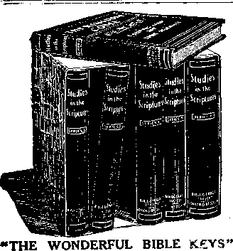
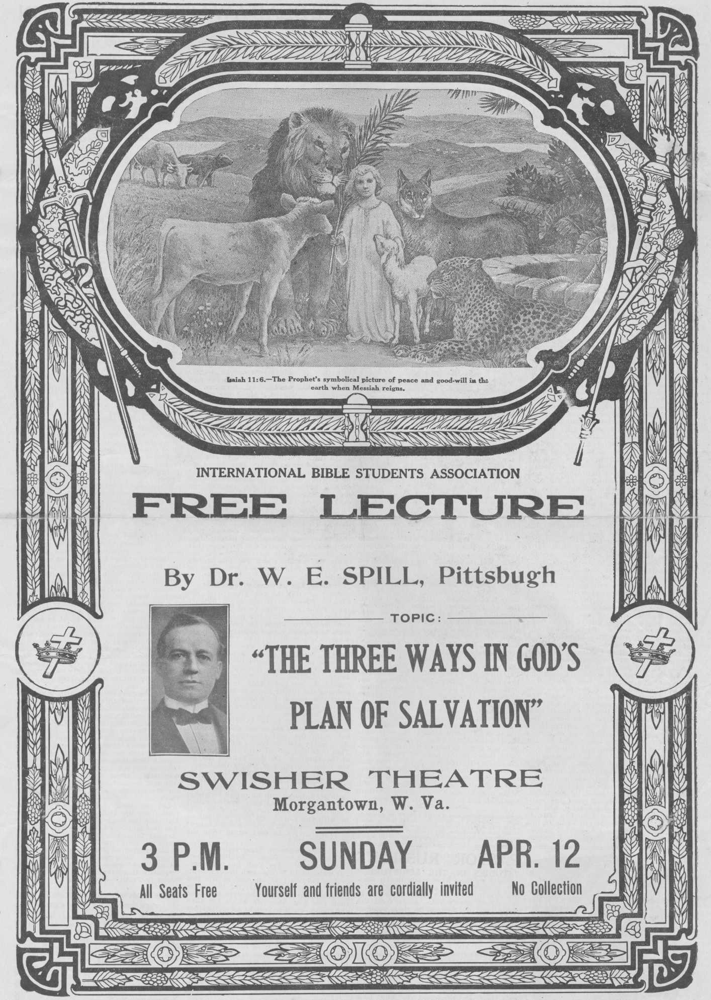

Vol. V. NEW YORK CITY
WE’RE A NATION OF WRECKS, SAYS UNIVERSITY HEAD.
The restless, moving life we lead will drive us all to neurasthenia. Leading the pace that kills, not so much as regards vice, but the desire to be always on the move, has ruined our schools and colleges and has attacked the mental and moral liber of the American brain.
These are some of the signals of danger set up in the roadway of American life by the Rev. John Cavanaugh, president of Notre Dame University, in an attack on modern living as compared with ancient customs and development, in which the latter in no way suffer. Three passions, he says, amazingly developed in the American people, are tearing at the foundations of our characters and home lives. These are the passion for travel from place to place, the passion for public spectacles, whether they be good or bad, and th* passion for gregariousness as against home life.
Father Cavanaugh said: “It is often lisputed upon good grounds whether there has been any real progress of the human race within the time of recorded history. In my mind the old poems are the best poems; the old philosophy the best philosophy; the old sculpture, paintings and architecture are still the models. Demosthenes and Cicero still hold their prominence. In every important phase of expression modern life has made no development.
“Within my lifetime I have seen three passions developed in the American people—the pass’on for travel from place to place; the passion for public spectacles and entertainment, and the passion for gregariousness as against home life. In the poorest parts of the country, in the hardest times, among the people least favorably conditioned financially, I find the railroad trains and the street cars crowded with all sorts of people darting here and there on errands of pleasure. The theaters are crowded, the dance hall and the public garden are more frequented than ever, and a new and horrible form of popular entertainment has been found in the 5-cent theater.
Family Hearth Is Obsolete.
“Steam heat and the modern methods of living have driven out the old family hearth in the literal sense; and the passion for living in crowds or among strangers has killed off the old family hearth in the poetic and social sense as well. An evening that a young woman spends With her family alone is dull, flat and Unprofitable; a night that a young man spends with his mother and father at home is a lost night. In a cartoon a doting father is pictured as trying to catch a glimpse of his pet boy home from college for the Christmas holidays. The time the old man has darting in and out around the home is amusing in the picture but not in life. That college boy is legion.
“Obviously, what the country needs is chloroform or locomotor ataxia. The effect- of this restless, moving, unreposeful life will be national neurasthenia. Its effect on the mentality of the people is already seen in the thin, pale courses of our high schools, and in the fact that our colleges are deep in social things and shallow in intellectual things.
Modern Fiction a Narcotic.
“I know an eminent neurologist who is treating a dipsomaniac at the present time, and one of the prescriptions he has laid down with most earnestness is that the patient shall abstain from reading popular fiction and from frequentation of the play. The old tragedies scourged the moral power into action; so did the old books. Modern fiction and modern drama are narcotics to the will. They are developing a tribe of maudlin weaklings.
“But in scoring the modern life for negative developments surely something may be said for science, however, and very much may be said for the things that make for comfort and convenience in life. To some of us the railroad train, the steamship and the automobile appeal as conveniences, but to the greater number of Americans such inventions and fruits of the few great brains are merely instruments of their desire to lead the pace that kills.”—St. Louis Fost-Dispatch.
The following article is selected from Pastor Russeli’s famous book, “The Battle of Armageddon,” Vol. IV of the well-known “STUDIES IN THE SCRIPTURES” Series, now published in 19 languages. This volume, of 688 pages, neatly bound in English Maroon Cloth, gold embossed, will be sent postpaid to any address on receipt of 35 cents. The book Is sold at cost price to enable even the poorest to have its aid in Bible Study. Orders may be sent, if desired, in our care.—Editor.
THE BATTLE OF ARMAGEDDON
“And He gathered them together into a place called in the Hebrew tongue ARMAGEDDON .......to the Battle of that Great Day of
God Almighty.”—Revelation 16:16, 14.
ARMAGEDDON is a Hebrew word sig-nifying the Hill of Megiddo, or the Mount of Destruction. Megiddo occupied a very marked position on the southern edge of the Plain of Esdraelon, and commanded an important pass into the hi’l country. This locality was the great battle-ground of Palestine, on which were fought many of the famous battles of Old Testament history. There Gideon and his little band alarmed and discomfited the Midianites, who destroyed one another in their flight. (Judges 7:19-23.) There King Saul was defeated by the Philistines. (1 Sam. 31:1-6.) There King Josiah was slain by Pharaoh-Necho in one of the most disastrous conflicts in the history of Israel. (2 Chron. 35:22-25.) There also King Ahab and his wife Jezebel lived, in the city of Jezreel, where Jezebel afterwards met a horrible death.—2 Kings 9:30-37.
These battles were in a sense typical. The defeat of the Midianites released the : _ .ple of Israel from bondage to Midian. Thus Gideon and his band typified our Lord and the Church, who are to release mank’nd from their bondage of Sin and Death. The death of King Saul and the overthrow of his kingdom by the Philistines opened the way for the reign of David, who typified Messiah. King Ahab typified the civil government, symbolically called the “Dragon” in the Revelation. Queen Jezebel symbolically foreshadowed the great harlot, Babylon, and as such she is mentioned by name. “Thou sufferest that woman Jezebel, which calleth herself a prophetess,' to teach and to seduce my servants.”—Revelation 2:20.
In the Scriptures the Lord has evidently seen fit to associate the name of this famous battle-field, Armageddon, with the great controversy between Truth and Error, right and wrong, God and Mammon, with which the Gospel Age will close and the Messianic Age be ushered in. He has purposely used highly symbolic language in the last book of the Bible, evidently with a view to hiding certain important truths until the due time for their revealment. But even in the due time, “None of the wicked shall understand; but the wise shall understand.” (Dan. 12:10.) None who are out of heart harmony with God shall know; but only the wise among His people—the wise virgin class of the Master’s parable. —Matt. 25:1-13.
.When we consider our text, therefore, we are not to expect any gathering of the people literally to the Hill of Megiddo. Rather we are to look for that which is symbolized by that mountain. Many things are being called “The Battle of Armageddon”; this phrase is being used in many ways and from many standpoints. But Christians realize that this word Armageddon specially belongs to the Bible, where it is used in a spiritual sense. If, therefore, the present is an opportune time in which to consider the Battle of Armageddon from a political standpoint, it surely is the proper time to consider the term from its true religious point of view.
We all know that the book of Revelation is full of symbols. God seems to have placed this book last in the Bible with the intent of covering up great and important truths. That it contains valuable truths is the opinion of all Bible students. Yet so skillfully has God covered those truths that His people in times past have not been able fully and clearly to discern them. Bible students believe that this has been the Divine intention, not only because these truths were not due to be understood, but because God intends to keep certain features of His Truth from the world. Mankind have always misunderstood the Divine Plan; for God in His Wisdom wishes to have them misunderstand. The truths recorded in the Revelation are not for the world, nor for nominal Christians, but for the Church—the Body of Christ, the saintly ones—“the Church of the First-borns which are written in Heaven.” To these the knowledge will become “meat in due season.” “The wise shall understand.”
The Scriptures abound with allusions to Armageddon. Our Lord Jesus calls it “great tribulation, such as was not since the beginning of the world to this time, no, nor ever shall be.” (Matt. 24:21.) The Prophet Daniel describes it as “a time of trouble, such as never was since there was a nation, even to that same time.” (Dan. 12:1.) Closely in connection with this statement Daniel declares that God’s Representative, “Michael, shall stand up, the great Prince which standeth for the children of” Israel. The word “Michael” signifies “He who is,like God”—the Godlike One. He will stand up for the salvation of God’s people, for the rectification of error and wrong, for the establishment of right and truth, to bring to the world of mankind the great Kingdom of God, which has been preached from the days of Abraham.
Time for the Establishment of Messiah’s Kingdom.
The Revelation of St. John, being a book of symbols, will not be understood by the world. God Himself has said that only at a certain time may even the Church expect to understand. When the Prophet Daniel inquired concerning the meaning of his vision, the angel replied, “Go thy way, Daniel; for the words are closed up and sealed till the Time of the End”—not the end of the world, but the end of the Age—the end of this Dispensation. “The earth abideth forever.”— Ecclesiastes 1:4.
St. Peter tells us that this Age is to end in a great conflagration—symbolical of the Time of Trouble, in which present institutions will be swallowed up. (2 Pet. 3:8-13.) Elsewhere in the Scriptures, this terrible Time of Trouble is symbolically represented as a storm, as a whirlwind, as a fire, to consume everything. After the present order shall have passed away in the great Time of Trouble, God Himself will establish His Kingdom —the one for which we pray, “Thy Kingdom come; Thy will be done on earth, as it is done in Heaven.”
If, then, there is anything to indicate that we are living in the end of the Gospel Age, anything to indicate that the Virgins are trimming their lamps, we may rest assured that the time for the Wise Virgins to enter into glory is close at hand. What a blessed message is this for “all who love His appearing”!
In the same prophecy which tells that the Time of the End is the time for the wise toward God to understand, we are told that this time will be especially marked by two particular features: first, “Many shall run to and fro”; second, “Knowledge shall be increased.” (Dan.
FREE LITERATURE!
Send postal-card request for free copies of this paper. Some of the interesting subjects you may have for asking are:
Calamities—Why Permitted?
Creed Idols Smashed!
Spiritism is Demonism!
Cardinal Gibbons’ Sermon.
Prince Lucifer of Old Now Prince of Demons.
The Hope of Immortality.
Do You Believe in the Resurrection?
Most Precious Text.
Our Lord’s Return.
Which Is the True Gospel?
: vv iiiuiA tut; a a uc uruspci i by
■S Where Are the Dead?
£{X X$X Z$x Z(X ZiV /(X Z(X Z|X Z|K Z|X
12:4.) Today we see this prophecy fulfilled. All over the world people are running to and fro as never before. Railroads, steamboats, automobiles, electric cars—surface, subway and elevated—etc., carry mankind everywhere. General increase of knowledge characterizes our wonderful day. Every child ten years old is able to read. All over the world are books, newspapers, Bibles in every home —opportunity for knowledge such as never has been known since man was on earth.
The remarkable fulfillment of this prophecy marks our day as the Time of the End, in which the present Dispensation is to be concluded and the New Dispensation is to be ushered in—the time when God’s people will be able to understand the situation and to get ready for their change.
Principles, Not Individuals, Under Discussion.
All Christian people credit the book of Revelation to our Lord, as St. John does. (Rev. 1:1.) Therefore we are not responsible for the symbolism used in that book. There are so many ways in which one might be misunderstood, even by good Christian people, that we naturally feel a delicacy about expressing our views. As we proceed to set forth our understanding of the symbols of the Revelation, w& wish to state most emphatically that we are saying nothing whatever against godly Christians anywhere, at any time, whether in any church or out of any church. We , have nothing to say respecting people. We discuss PRINCIPLES, DOCTRINES, ALWAYS; individuals, NEVER! God has not commissioned us to discuss people; it is ours to discuss His Word.
As we present our interpretation of the symbols of Revelation, we realize that the Word of God conveys a very terribit ar- 1 raignment of some of the great systems of our day—some that we have long reverenced and esteemed, that we have thought contained many who are godly in word and in deed. Let us, therefore, clearly distinguish between Individuals and systems. We say nothing against the godly individual, but in the interpretation of the Word of God what we have to say is merely in respect to these systems. Indeed we believe that the saintly people of God are left out of these symbols, probably because the saints of God, as compared with the hundreds of millions of humanity, are merely a small company, as Jesus said: “Fear not, Little Flock.”
Coming to the interpretation of the symbols of Rev. 16:13-16, we find that there are three agencies connected with the gathering of the hosts to this Battle of Armageddon. We read that out of the mouth of the Beast, out of the mouth of the False Prophet and out of the mouth of the Dragon proceeded three unclean spirits like frogs; and that these three unclean spirits, frog-like, went forth throughout the whole world to gather the whole world into this Battle of Armageddon.
It is proper, then, for us to inquire what systems are meant by these symbolic words—the Dragon, the Beast and the False Prophet. After we shall discover what is meant by these terms, we shall ask what is symbolized by the frogs that came out from their mouths.
Throughout the Bible, a Beast is the symbol used to represent a government. In Daniel’s prophecy the great universal empires of the earth are thus symbolized. Babylon was the Lion, Medo-Persia the Bear, Greece the Leopard, and Rome the Dragon. (Dan. 7:1-8.) The Roman Empire still persists. Christendom is a part of that great Roman Empire which began in the days of Csesar and which, according to the Scriptures, still is in the world.
(Continued on page 2, column 2.)
PUBLISHED AT
S2 BEEKMAN ST., NEW YORK CITY
C. W. Hek, Editor.
Monthly—12 cts. a Year. Single Copy, 1c.
An Independent, Unsectarian Religious Newspaper, Specially Devoted to the Forwarding of the Laymen’s Home Missionary Movement for the Glory of God and Good of Humanity.
AN UNSECTARIAN PRESENTATION.
Dr. H. S. Pritchett, President of the Carnegie Foundation for the advancement of teaching, speaking on Leadership in the Colleges, said:
“Church membership is no test as to whether a man is a religious man or not; nor is it any criterion by which religious men may be chosen. The constant use of this criterion has served to Impose upon young men both in and out ■of college the idea that the obligations of the religious life are binding only on those who have assumed membership in religious organizations. No more unhappy impression could have been created. The obligations of the religious life are the same upon every human being. The idea that he can escape the working out of the great laws which the Maker of the Universe has set up by declining to belong to a human organization is a grotesque one, and yet this is an idea common among young men. I believe, therefore, that the man of sincere religious life, outside any formal organization, has a notable opportunity today for religious leadership in college, and that he escapes some of the limitations which lie in the way of his brother who is part of a definite religious organization. No man has the right to evade the duties of leadership or of service by reason of his belonging to, or of his not belonging to, fl, religious organization. To advance such a claim is like insisting that a man is not an American unless he belongs to the Republican or the Democratic party.”
A DANGEROUS TREND.
The pastor of one of the largest and Strongest Baptist churches in Ohio writes us, in a letter bearing upon another subject:
“I wonder sometimes where we are going to land. The people seem to have lost all sense of personal relation to their Lord, and naturally have no interest in the progress of His Kingdom. The standard of morality is lower—not immoral, perhaps, so much as unmoral. The moral principle does not grip as once it did. The fact is that the age does not want a moral code to which it shall bring its .conduct for scrutiny. That spirit is in our churches all over this city, and, as men speak their heartaches to me, I guess other cities are troubled that way as well as we.
“I am amazed at the number of meetings I find myself in for the transaction of business of the Kingdom with never * word of prayer; just business, coldblooded and heartless as buying and selling steel rails. We arc businessizing the Lord out of His place and authority everywhere. Business courtesy has a larger place than New Testament precedent. An appeal to the New Testament is often self-imposed ostracism. The loneliness of it all sometimes comes over me with a depression that is unbearable. I have wished sometimes that I could -spend the rest of my life in some mission field, where I could get away from the "Bounding brass’ of this cultural religion which spends itself in all kinds of service because it is the prevailing fad, but does nothing because it is a loving expression of a personal relation to the Lord. It is a form of religion, sure enough, but as hopeless and helpless to save men as the outer darkness. . . . Every pastor I know who has opened his heart to me is suffering from just the same thing. People are the very art of courtesy, but the Word falls like hail upon an iron roof.”—Journal and Messenger.
ON THE LORD’S ARM.
Leaning on His loving arm, Free from danger, safe from harm; No longer anxious, without fears, I travel calmly through the years.
'Tis worth the scorn of friend and foe,
To feel His sweet caresses so,
Worth my very all, my life.
To follow Him e’en tho’ through strife;
To hear Him say He understands; And safe within my Savior’s hands, To rest 'til all the storm is past, fie will shield me from the blast.
Elizabeth Woodworth.
“WHERE AKE THE DEAD !”
This article was published in our last Issue of THE BIBLE STUDENTS MONTHLY, Vol. 5, No. 3. The interest aroused and the great demand for copies of it have been remarkable. A sample copy will be mailed to any one free upon receipt of post-card request.
(Continued from page •
Practically all Bible exegetes agree inai the Dragon of the Revelation represents the purely civil power, wherever it may be found. We do not understand this to mean that all the powers of the world are evil or of the Devil, but that the Dragon is the symbol which the Lord is pleased to use to represent civil power.
The Beast of Rev. 16:13 is the same that is mentioned in Rev. 13:2, where it is described as resembling a leopard— spotted. Protestant interpreters of the Revelation agree that this symbol refers to the Papal system—not to the Pope, not to Catholic congregations, not to individual Catholics, but to the system as a whole, which has existed for centuries.
In His Word, God has been pleased to recognize the Papacy as a system, as a government. Papacy claims that the Kingdom of God, Messiah’s Kingdom, was established in 799 A.D.; that it lasted a thousand years, just as the Bible declares Christ’s Kingdom will last; and that it expired in 1799 A.D. They claim also that since 1799 this Kingdom of Christ (that is, the Papal system, represented in the Revelation as the Beast) has been suffering violence; and that during this time the Devil has been loosed, in fulfillment of Revelation 20:7.
History records that the era closing with 1799, marked by Napoleon’s Egyptian campaign, sealed and defined the limit of Papal dominion over the nations. Napoleon even took the Pope prisoner to France, where he died. This humiliating experience, Roman Catholics claim, marks the time of the loosing of Satan in fulfillment of Revelation 20:7.
We cannot agree with our Catholic brethren’s interpretation of prophecy. The Bible Is surely right when it declares that “the prince of this world is Satan,” and that this is “the present evil world” or age. The reason why there is so much graft, false doctrine, delusion, ignorance, superstition everywhere is that Satan is the great being who is deceiving the world. According to the Scriptures, Satan is to be bound for a thousand years, that he may deceive the nations no more. (Rev. 20:3.) After the thousand years shall have been finished, Satan shall be loosed for a little season to test mankind. Then he will be destroyed in the Second Death, together with all who are in harmony with him.
Bible students are only now getting their eyes open to see the lengths, breadths, heights and depths of the Love of God— His wonderful provision made, first, for the Church, who are to share in the Kingdom glory; and second, for the world of mankind, who will receive the blessing of an uplift to human perfection during that thousand years. This glorious Epoch js just approaching, instead of being in the past. So glorious will be the condition of humanity at the close of Messiah’s Kingdom that nothing ever dreamed will compare with it. But the great work of God will not be perfected until every human being will have reached perfection, or will have been destroyed in the Second Death, because of refusal to come into harmony with the laws of righteousness. Then every creature in Heaven and on earth, will be heard saying, “Blessing and honor and glory and power be unto Him that sitteth upon the Throne and to the Lamb, for ever and ever.”—Rev. 5:13.
The Dragon, then, symbolizes the Roman power, represented by the civil power in the world. The Beast is the Papal system of government. The third symbol, the False Prophet, remains to be interpreted. This, we believe, is another name for the system elsewhere called “the Image of the Beast.” (Rev. 13:14.) According to the Scriptures, this Image is a very exact representation of the Beast. The False Prophet, or Image of the Beast, we understand to mean the Protestant Federation of Churches.
The Image of the Beast.
In order to see why the Protestant Federation of Churches should be symbolized as the Image of the Beast and as the False Prophet, we must examine other symbolical Scriptures. In Rev. 17:5, our attention is called to a great “mystery.” The word “harlot” in Scriptural symbolism does not mean an immoral person. It refers to the Church, which was to be the Kingdom of God, but which lost her virginity and became united to an earthly husband, instead of her Heavenly Husband. To what earthly husband did the Church unite? To the Roman Empire. In the minds of Luther and other reformers there was no doubt that there was a close union between the Church and the world. The Church for a time claimed to be waiting for Christ to set up His Kingdom. Finally she said, “I will not wait until the Second Coming of Christ, I will unite with the Roman Empire.”
All know the result. The Roman Catholic Church was exalted, and reigned as a queen for centuries. This union of Church and State is represented in a famous picture found in Italy. On a throne the Pope and the Emperor sit side by side. On one side are cardinals, bishops, the lower clergy and the laity, in order of rank. On the other side are generals, lieutenants, soldiers, etc., down to the common people. Thus the union of Church and State was recognized.
On the basis of this union all earthly governments are called Christian; for they claim unity as part and parcel with the Church. History tells us that for cem turies .the Church appointed the earthly kings. Whomsoever the Pope desired was crowned. Tn proof of rne supremacy of the Church a story is told in regard to Emperor Henry IV of Germany, who had incurred the Papal displeasure, and who as a punishment was compelled to stand for three days without the castle gates of Canossa, barefooted, and clad only in the haircloth shirt of a penitent, exposed to the inclemency of mid-winter. Then he was forced to crawl on hands and knees into the presence’ of the Pontiff, whose silk stocking was removed in order that the emperor might kiss the Pope’s great toe, in fulfillment of Psa. 2:10, 12, “Kiss the Son, O ye kings of the earth.”
To our understanding this is a mistaken application of Scripture. “The Son” is not the Pope. The “holy hill” is the Kingdom of God. His agency is symbolized as the holy Mount Zion. The great Messiah will completely overthrow all the things of the present time and will establish the Kingdom of Righteousness and Truth, which will uplift mankind out of sin and degradation.
Roman Catholics believe that the Pope is the vicegerent of Christ, reigning in His stead. They believe that the present is the time when Satan is loosed to deceive the nations; that very shortly the Church will again get full power in the world; and that as a result every one who does not obey them will be destroyed. This interpretation points us to Revelation, 13th and 20th chapters. Protestants do not appreciate the situation. Doubtless all. thinking people have noticed that overtures for union come from Protestantism, but never from Catholicism.
The question now arises, Why should the Scriptures picture Protestantism as an Image of the Beast? When and how did this come about? From the time of the Reformation, Protestants had been striving individually to get out of the darkness of the past and thus had formulated many creeds and had organized many denominations. But about the middle of the last century the leaders began to see that if every one continued to study the Bible individually the time would come when each one would have an individual creed. To prevent what seemed to them a loss of power, they planned a union of Protestants in a system called the Evangelical Alliance.
The Evangelical Alliance, an organization of the different Protestant denominations, was formed in 1846 for the very purpose of doing in their own way the same thing that Catholicism would do in its own way. Seeing the great power that Roman Catholics would exercise because of a united system, Protestants said, “We are divided. We have no power. We will organize.” Then and there, according to the Scriptures, they made an Image of the Beast.
The Bible says, however, that before the Image can do any particular harm it must receive life from the two-horned Beast. (Rev. 13:15.) This two-horned Beast with horns like a lamb, but a voice like a dragon, we believe represents the Church of England, which is not a party to the Evangelical Alliance. The Church of England makes the claim which the Church of Rome makes—that she is the true Church; that all others are wrong; that she has the original apostolic succession; and that no one is commissioned to preach unless he has had divine, apostolic hands laid upon him. This has been the contention of the Church of England for centuries, and constitutes the difference between that Church and all other Protestant denominations.
Although the Evangelical Alliance was organized in 1846, it has not been able to accomplish its purpose, because it did not know how to operate. The denominations in the Alliance were united only in name, and hence have worked against each other. Denominations outside of the Alliance were declared to be unauthorized; and they, in turn, challenged the Evangelical Churches to show where they got authority to preach. As a result the Image had no power to act; it was trodden upon; and to get vitality—life—it would need apostolic succession; it must have something as a basis for operation.
The Scriptures indicate that the Church of England will become intimate with the Evangelical Alliance and will give it apostolic authority to preach. Because of this union the Alliance will be able to say, “We have apostolic authority to preach. Let no one speak unless he has our sanction.” This action on their part is described in Rev. 13:17. None will be allowed to buy or sell spiritual things in the spiritual market unless he has either the mark of the Beast or the mark of the Image.
In Rev. 16:13 we find mention of the False Prophet, another representation of the Image—the vitalized product of the Evangelical Alliance, which has taken the form of Church Federation, and has today a great deal of vitality. Whether we can expect it to have more remains to be seen. The Scriptures clearly indicate that the Image of the Beast is to get so great power that it will do the same thing that the Roman Catholic Church did in the past; and that the two systems, Catholic and Protestant, will rule the civilized world with a high hand through the civil power—the Dragon.
“Three Unclean Spirits Like Frogs.”
The Scriptures tell us that this result is to be brought about by the utterances of the combined power of Church and State. “Three unclean spirits like frogs came out of the mouth of the Beast, and out of the mouth of the Dragon and the mouth of the False Prophet.” In this passage, the spirit is a doctrine—an unclean doctrine—a false doctrine. Each of these systems will utter the same things, and these utterances will have the effect of gathering the kingdoms of earth together to the great Battle of Armageddon.
The symbolism of Scripture, rightly un: derstood, is very forceful, and there is always a close resemblance between the symbol itself and the thing symbolized. When the Holy Spirit uses a frog to represent certain doctrines or teachings, we may be sure that the application will fit well. While a frog is a small creature, yet it puffs itself up until it almost bursts with the effort to be somebody. A frog has a very wise look even though it does not know very much. A frog croaks whenever it utters a sound.
The three most prominent characteristics of a frog, then, are pomposity, an air of superior wisdom and knowledge, and a continual croaking. Applying these characteristics to the picture given in the Divine W«rd, we learn that from the civil power, from the Catholic Church and from the Federation of Protestant Churches will go forth the same teachings. The spirit of all will be boastful; an air of superior knowledge and wisdom will be assumed; all will foretell dire results to follow any failure to obey their counsels. However conflicting the creeds, the differences will be ignored in the general proposition that nothing ancient must be disturbed, or investigated, or repudiated.
The Divine authority of the Church, and the Divine right of kings, aside from the Church, will not be allowed to conflict; for both will be indorsed. Any persons or teachings in conflict with these boastful, unscriptural claims will be branded as everything vile, at the mouths of the frogs, croaking from pulpits and platforms, and through the religious and secular press. The nobler sentiments of some will be strangled by the philosophy of the same evil spirit which spoke through Caiaphas, the high priest, respecting our Lord Jesus. As Caiaphas declared it expedient to commit a crime in violation of justice, both human and Divine, to be rid of Jesus and His teachings, so this frog-like spirit will approve of any and every violation of principle necessary to self-protection.
Every true Christian is ashamed to look back upon the pages of history and see what terrible deeds were done in the name of God and justice, and in the name of our Lord Jesus- We are not to think for a moment that these frog spirits, or doctrines, are all bad, but rather that they are doctrines of bombast and pomposity, representing themselves to be very wise and great, and having the backing of centuries. Out of the mouth of the Dragon comes the doctrine of the Divine right of kings: “Do not look back of the curtain of history to see where the kings got that right. Accept the doctrine; for if you do not, and if men look into the matter, there will be a terrible revolution and everything will go down!”
The Beast and the False Prophet have similar croakings. The Catholic Church says, “Do not look behind! Do not question anything about the Church!” Protestantism says, also, “We are great, we are wise, we know a great deal. Keep quiet! No one will then know that you know nothing.” All say (croaking): “We tell you that if you say anything against present arrangements, terrible things will come to pass!”
Political parties are figuring in this. All declare, “If any change should come, it Will mean terrible disaster!” Some have the backbone and some have the civil power behind them, but unitedly they croak to the people that if any change is made, it will mean ruin to the present order. In the language of our day. “Stand pat!” is the order in Church and in State; but the people are being moved by fear. It is this croaking of the Beast, the Dragon and the False Prophet that will arouse the kings of earth and gather them together to the Armageddon Battle and destruction.
The ecclesiastical kings and princes, with their retinue of clergy and faithful adherents, will be gathered in solid phalanx—Protestant and Catholic. The political kings and princes, senators, and all in high places, with their henchmen and retainers, will follow in line on the same side. The financial kings and merchant princes, and all whom they can influence by the most gigantic power ever yet exercised in the world, will join the same side, according to this prophecy. They do not realize, however, that they are coming to Armageddon; yet strange to say, this is a part of their very cry, “Come together to Armageddon!”
Speaking of our day, our Lord declared, “Men’s hearts failing them for fear and for looking after those things which are coming on the earth; for the powers of heaven shall be shaken.” (Luke 21:26.) The kings of Europe know not what to do. All sectarianism is being shaken. Many people of God are in perplexity.
The croaking of the frog spirits, or doctrines, will gather the kings and princes, financial, political, religious and industrial, into one great army. The spirit of fear, inspired by the croaking, will scourge the passions of otherwise good and reasonable men to fury—desperation. In their blind following of these evil spirits, evil doctrines, they will be ready to sacrifice life and everything on what they mistakenly suppose is the altar of Justice and Righteousness under a Divine arrangement.
Many noble people in this great army will assume an attitude quite contrary to their preference. For a time the wheels of liberty and progress will be turned backward, and mediaeval restraints will be considered necessary for selfpreservation—for the maintenance of the present order of things and for the prevention of the new order which God has decreed, the due time for which is at hand. Even those who may be God’s people do not stop to consider whether it is His will that things should continue as they have been for the past six thousand years. The Bible says that such is not God’s will, but that there is to be a great overturning—a new order.
For a brief time, as we understand the Scriptures, these combined forces of Armageddon will triumph. Free speech, free mails, and other liberties which have come to be the very breath of the masses In our day, will be ruthlessly shut off on the plea of necessity, the glory of God, the commands of the Church, etc. The safety-valve will be sat upon, and thus will cease to annoy earth’s kings with the sound of escaping steam; and all will seem to be serene—until the great social explosion described in the Revelation as an earthquake will take place. In symbolic language an earthquake signifies social revolution, and the Scriptural declaration is that none like it ever before occurred. (Rev. 16:18, 19.) See our Lord’s reference to it in Matt. 24:21.
The Lord’s Great Army.
At this juncture, the Scriptures show, •Divine Power will step forward, and God will gather the marshaled hosts to Armageddon—to the Mount of Destruction. (Rev. 16:16.) The very thing which they ■sought to avert by their union, federation, etc., will be the very thing that they will hasten. Other Scriptures tell us that God will be represented by Messiah, and that He will be on the side of the masses. “At that time shall Michael [the Godlike One—Messiah] stand up.” (Dan. 12:1.) He will assume authority. He will take possession of His, Kingdom in a manner little looked for by many of those who erroneously have been claiming to be His Kingdom, and authorized by Him to reign in His name and in His stead.
Our Lord Jesus declared, “His servants ye are unto whom ye render service.” Some may be rendering service to Satan and to error, who claim to be rendering •service to God and to righteousness; and some may serve ignorantly, as did Saul of Tarsus, who “verily thought that he did God service” in persecuting the Church. The same principle holds true reversely. As an earthly king does not hold himself responsible for the moral character of each soldier who fights his battles, so the Lord does not vouch for the moral character of all who enlist and fight on His side of any question. His servants they are to whom they render service, whatever the motive prompting.
The same principle will apply in the coming Battle of Armageddon. God’s •side of that battle will be the people’s •side; and that very nondescript host, the people, will be pitted at the beginning of the battle. Anarchists, Socialists, and hot-headed radicals of every school of reason and unreason, will be in the forefront of that battle. He who has any knowledge of army life knows that a great army is composed of all classes.
The masses will be restless under their •restraints, but will be conscious of their weakness as compared with the kings and princes, financial, social, religious and political, who will then hold sway. The majority of the poor and the middle class prefer peace at almost any price. The masses have no sympathy with anarchy. They realize truly that the worst form ■of government is better than none. The masses will seek relief through the ballot and the peaceful readjustment of earth’s affairs for the elimination of evil, for the placing of monopolies and utilities and the supplies of nature in the hands of the people for the public good. The crisis will be reached when the hitherto upholders of the law shall become violators of the law and resisters of the will of the majority as expressed by the ballot. Fear for the future will goad the well-meaning masses to desperation, and anarchy will result when Socialism fails.
The Lord’s saints are not to be in this battle at all. God’s consecrated people, longing at heart for Messiah's Kingdom,
will patiently abide the Lord’s time, and wait unmurmuringly for it. Their lamps trimmed and burning, they will not be in darkness respecting the momentous events of the impending battle; but they will be of good courage, knowing the outcome portrayed in the “more sure Word of prophecy,” to which they have done well to “take heed, as unto a light that shineth in a dark place, until the Day dawn.”—2 Peter 1:19.
The question now arises, Why did not God send His Kingdom sooner? Why is Armageddon necessary? We answer that God has His own times and seasons, and that He has appointed the Great Seventh Thousand-Year Day for the reign of Christ. Divine Wisdom has withheld until our day the great knowledge and skill which is breeding at the same time millionaires and discontents. Had God lifted the veil of ignorance a thousand years sooner, the world would have lined up for Armageddon a thousand years sooner. God did not bring these things before the present time because His Plan has various parts, all of which are converging at the same time. In kindness God veiled the eyes of mankind until the gathering to Armageddon would immediately precede Messiah’s taking to Himself His great power and beginning His reign.— Revelation 11:17, 18.
Th j attitude of the people of God should be that of great thankfulness to the Giver of every good. They should make provision for the great storm that is coming and keep very quiet, not unduly interested in the side of either rich or poor. We know in advance that the Lord is on the side of the people. He it is that will fight the Armageddon Battle, and His agency will be that peculiar army—all classes. When this great “earthquake” of social revolution comes, it will not be a mere handful of anarchists, but an uprising of the people to throw off the great power that is strangling them. Selfishness is at the bottom of the whole matter.
Not Yet, But Soon.
For forty years the Armageddon forces have been mustering for both sides of the conflict. Strikes, lockouts and riots, great and small, have been merely incidental skirmishes as the belligerents cross each other’s paths. Court and army scandals in Europe, insurance, trust and court scandals in America, have shaken public confidence. Dynamite plots, charged by turns on employees and on employers, have tended to make each distrustful of the other. Bitter and angry feelings on both sides are more and more manifested. The lines of battle are daily becoming more distinctly marked. Nevertheless Armageddon cannot yet be fought.
Gentile Times have still two years to run. The Image of the Beast must yet receive life—power. It must be transformed from a mere mechanism to a living force. Protestant Federation realizes that its organization will continue to be futile unless it receives vitalization— unless its clergy directly or indirectly shall be recognized as possessed of apostolic ordination and authority to teach. This, the prophecy indicates, will come from the two-horned Beast, which we believe symbolically represents the Church of England. High-handed activities of Protestantism and Catholicism, operating in conjunction for the suppression of human liberties, await this vivifying of the Image. This may come soon, but Armageddon cannot precede it, but must follow—perhaps a year after, according to our view of prophecy.
Still another thing intervenes. Although the Jews are gradually flowing into Palestine, gradually obtaining control of the land of Canaan, and although reports say that already nineteen millionaires are there, nevertheless, prophecy requires an evidently larger number of wealthy Hebrews to be there before the Armageddon crisis be reached. Indeed, we understand that “Jacob’s trouble” in the Holy Land will come at the very close of Armageddon. Then Messiah’s Kingdom will begin to be manifested. Thenceforth Israel in the Land of Promise will gradually rise from the ashes of the past to the grandeur of prophecy. Through its Divinely appointed princes, Messiah’s Kingdom, all-powerful, but invisible, will begin to roll away the curse and to lift up mankind, and to give beauty for ashes.
The succeeding chapters of tf<THE BATTLE OF ARMAGEDDON” continue this convincing presentation to a logical and satisfactory conclusion to even the most critical. 35c. in stamps sent to Bible & Tract Society, Brooklyn, N. Y., will bring to you, by return mail, the volume, in good cloth binding. Order now.
“STUDIES IN THE SCRIPTURES”
These volumes have made Pastor Russell famous. Over seven million copies are now in the homes of Christian people throughout the world. Aside from the Bible itself, the demand for these volumes has been the greatest of any treatise ever published. They are translated into nineteen languages, and sold at barely cost price by the publishers—$2.65 for the entire set of six books, and including a year’s subscription to THE WATCH TOWER, a sixteen-page, semi-monthly religious journal, of which Pastor Russell is editor. The books aggregate over 3,000 pages, and are bound in handsome imported maroon cloth, embossed in oriental gold leaf—an ornament to any book shelf.
BIBLE AND TRACT SOCIETY, Publishers BROOKLYN, N. Y.
THE DEAD AWAIT RESURRECTION
“If I go and prepare a place for you, I will come again and receive you unto myself; that where I am, there ye may be also.”—John 14 :3.
THE ERROR of supposing that men are * alive when they are dead lies close to the foundation of every theological error the world over. We have all erred in taking the guess of Plato instead of the Word of God, and we can get rid of our difficulties and theological entanglements only by retracing our steps. Notwithstanding all that we have said and written, calling attention to the words of the Scriptures, the question frequently arises, Do you mean to tell us that our friends do not go to Heaven immediately when they die?
That is exactly what we are endeavoring to demonstrate to be the teaching of the Bible. The Bible alone, of all religious books, teaches that a dead man is dead, and knows nothing, and that his only hope is in the Divine arrangement through Christ, by a resurrection of the dead—“both of the just and of the unjust.”—Acts 24:15.
We Should Take Comfort.
When we remember that, according to nearly all the religious creeds and theories of the world, 999 out ’of every thousand pass immediately at death into most horrible sufferings, one would think that all would be glad to promptly accept the Bible testimony, that death is a dreamless sleep until the resurrection awakening. Why anyone should prefer to think of his friends and neighbors and the heathen millions as suffering torture, rather than to think of them as being asleep, is beyond our comprehension. The fact probably is that selfishness has such a hold upon the masses that they care and think little respecting others than their near relatives* and friends; and the same selfishness inclines them, with infatuation, to believe that they and their relatives, though no better than the rest of mankind, are special favorites of Heaven, and will be granted the reward of the saints, however unsaintly their lives may have been. Some one has suggested that the ideal prayer for such is:
“God bless me and my wife, My son John and his wife; Us four, and no more.”
In harmony with this we And that when death invades a family circle this selfish egotism assumes- that the deceased is acceptable to God as a saint, and wafted immediately to heavenly bliss—regardless of how unsaintly had been the life and how little of the Spirit of Christ was ever manifested. The deception is reinforced by the Christian minister called to conduct the funeral service. Whatever he may read from the Bible to the effect that, if there be no resurrection, they that have fallen asleep have perished, his sermon is sure to give the inference that the deceased needs no resurrection, because he has not died, but has merely been transferred from a lower plane of life to a higher one.
“Come, Let us Reason Together.”
Proof of this is not given and not asked. The proof is not given because there is no Scriptural proof to give. It is not asked because the people are not sufficiently intelligent on religious subjects to demand a reason and a proof for what is presented to them. The remedy for all this will come when we become more intelligent, more reasoning. No minister of Christ should be abashed to be asked the reason for his faith. St. Peter exhorted that every Christian should be so thoroughly informed respecting the Divine Message as to be able to give a reason to whoever would ask concerning his own faith and his presentations to others.
Here note our text. In it the Master says not a word about our going to Him, but quite the contrary—that He would come again and receive us unto Himself. This is in full accord with the teachings of the Apostles. Do they not tell that at the Second Coming of Christ the Resurrection of the Church will be the first in order; that then that which was sown in weakness will be raised in power; that sown in dishonor will be raised in glory; that sown an animal body will be raised a spirit body; and that so we shall ever be with the Lord? Do they not tell us that this will'be an instantaneous change? Is it not styled an awakening from the sleep of death?
The Order of Resurrection.
Hearken to St. Paul: “Behold, I show you a mystery; we shall not all sleep, but we shall all be changed, in a moment, in the twinkling of an eye, at the last trump (seventh trumpet); for the trumpet shall sound,” “and the dead in Christ shall rise first; then we which are alive and remain shall be caught away together to meet the Lord in the air.” (1 Corinthians 15:51, 52; 1 Thessalonians 4:16, 17.) How plain, how simple! That will be the first meeting of the Church with her Lord. All of her members dying before that time will “sleep,” while those dying since that time will not need to sleep and wait for the glorious change. But says one, does not the Second Coming of Christ take place whenever His holy ones die? Does He not immediately come to receive them unto Himself?
Surely only a very lame theory could seek to bolster itself up by such a perversion of the Scriptures. If Christ were to come every time one of His saintly ones dies, would it not mean many com* ings instead of merely a Second Coming? And even if His faithful were very few Indeed, would it not seem that this would keep the Redeemer busy coming and departing every few minutes?
Only crass ignorance of the Bible could excuse any such misapplication of its teachings. Not merely one statement of the Scriptures bears upon this subject, but hundreds of statements of ScrAYure, by Jesus and the Apostles; and all contradict any such thought.
“No Man Hath Ascended to Heaven.”
Hearken to Jesus’ words, “No man hath ascended up to Heaven.” Only the Son of Man has ever been in Heaven. He has ascended up where .He was before, with additional glory and honor. He is now preparing a place for His Bride class and preparing the Bride class for the place—the place of honor at His own right hand. He is overseeing her experiences and causing all things to work together for her good, that she at His Second Coming may be prepared and be accepted as His Bride and granted a share in His glory, honor and immortality.
It is in full harmony with this that a little later on the Great Teacher declared that all the dead are in the grave, and that at His Second Advent He will first call forth His faithful ones to the perfection of life; and later will call forth the remainder of mankind, not as yet found worthy of life, that they may have an opportunity, a testing as respects their worthiness or unworthiness of everlasting1 life on the human plane.
Hear His assurance again respecting His faithful ones—that they shall share in His resurrection, the Chief Resurrection, to glory, honor, immortality, on the spirit plane. He said, “Blessed and holy are all they that have part in the First Resurrection; they shall be priests unto God and Christ, and shall reign with Him a thousand years.”—Revelation 20:6.
Be it noted that in all these assurances the Church is spoken of as a class, all of whom will enter into glory together, at Christ’s Second Coming, and not separately, as each may die. True, each has an individual trial or testing to determine whether or not he or she will be accounted worthy, or fitted for a place in the glorious Body of Christ, in the glorious Bride company; but the statement is repeatedly made that we shall be glorified together, shall have part in the one Resurrection.
“David Not Ascended to Heaven.”
In full accord with all the foregoing is St. Peter’s statement on the Day of Pentecost: “For David is not ascended into the heavens; his sepulchre is with us unto this day.” St. Peter’s words imply that if King David had ascended to Heaven he would have no sepulchre on earth. Similarly, we might say of all of the Prophets, and of all other persons, that, if once they ascended to the heavenly plane, they could not be said to have any sepulchre on earth, for the very thought connected with the word sepulchre is that of a personality awaiting a resurrection, awaiting deliverance from the state and condition of death. So the Scriptures always refer, not to a resurrection of the living, which would be an absurdity, but to a Resurrection of the Dead.
Note the connection in which the Apostle Peter uses this expression; “David is not ascended into the heavens.” He had just called attention to the fact that David prophesied of the resurrection of Jesus. In the prophecy he personated Jesus, and said, “Thou wilt not leave My soul in sheol (hades), nor suffer Thine Holy One to see corruption.” St. Peter argues that this was not true of David, that he did see corruption, that his soul was left in sheol and is still there, and will not be reclaimed until Messiah, in the Resurrection Morning, shall call him forth.
Let us, then, dear fellow-Christians, turn from the follies of the Dark Ages and take the inspired words of Jesus, the Apostles and Prophets, and have, indeed, “beauty for ashes, the oil of joy for the spirit of heaviness,” in respect to the understanding of the Heavenly Father’s Program. Thus we will find fulfilled in us more and more the Master’s prayer: “Sanctify them through Thy Truth; Thy Word is Truth.”—John 17:17.
J THE THIEF ON THE CROSS. h
J What did Jesus mean by His t x( words, “Verily I say unto thee to-day, thou shalt be with Me in Para-
3 dise”—if Paradise, lost 6,000 years ago, will not be restored until the
xj Second Coming of Jesus and the es-tablishment of His Kingdom?
M The full answer to this question A we will be pleased to send you free upon receipt of postal-card request.
xj Address, Bible & Tract Society, X Brooklyn, N. Y.
CHRISTENDOMINGREAT DANGER
THE “VERY ELECT" PROTECTED
“God shall send them strong delusions that they should believe a Ue; that they all might he condemned who believed not the Truth, but had pleasure in unrighteousness.”—2 Thessalonians 2 ill, 12.
THE statement of the Apostle James, 1 that God tempteth no man, is not to be understood as a contradiction to the language of our text. God tempteth no man to sin, to do wrong, but He has at various times sent or permitted siftings and testings among those who are nominally His people—to separate the true from the false. Sometimes a great truth becomes the sifting or separating cause, as at our Lord’s First Advent. There our
Lord’s presentation of Himself in the flesh to the covenanted nation, Israel, as the long-promised Saviour, Deliverer and King, became to that people as a whole, a test, separating the ‘‘Israelites indeed’* from the mass of the nation—separating the wheat from the chaff. Our text tells of the end or Harvest-time of this Gospel Age, and of how the Lord will now permit or “send” strong delusions for the purpose of sifting and separating the true from the false among those who have named the name of Christ. We hold that, according to the Scriptures, we are living in this Harvest period, and that the sifting of the wheat from the tares has begun, and that the strong delusions mentioned in our text are coming upon Christendom.
The Fallen Angels.
The Scriptures bring to our attention a class of spirit beings which fell from Divine favor before the Flood. These, we are told, have from that time until the present day been confined in chains of darkness in Tartarus—the circumambient air of this planet. The story of these fallen angels is briefly stated four times —in Genesis, 6:2; 1 Peter, 3:20; 2 Peter, 2:4; Jude 6. The Old and New Testament records are thus in agreement. Additionally, however, we have a multitude of Scriptures, both of the Old and New Testaments, which refer to these fallen angels as “demons”—unfortunately mistranslated “devils” in our common version. Without exception these demons are represented as cunning, deceitful, treacherous, devilish and as having a special malignant attitude toward mankind, and as taking special delight in misleading and deceiving humanity, particularly along irreligious lines and immoralities.
We call to your remembrance the Apostle’s statement regarding this mat-
- God’s people have their struggle or contention, not with flesh and blood, but with wicked spirits in influential positions. Again the same Apostle points out to us that Satan is the chief leader of these spirits or demons and declares that we are not ignorant of his devices, his intrigues, his deceptions; again he styles him as wily, adroit, cunning. He informs us that the heathen world, while thinking they are worshiping God, are really deceived by 'these demons; their religious theories and practices are really demonology instead of theology.—Ephesians 6:12; 2 Corinthians 2:11; 1 Peter 5:8.
Two Opposing Gospels.
The human family is in great distress through the fall; mental, moral and physical imperfections are manifest everywhere; “there is none righteous, no, not one.” As a consequence, all are agreed to the Apostle’s broad statement, “The whole creation groaneth and travaileth in pain together.” (Romans 8:22.) Naturally enough the groaning ones seek for the cause of their trouble as well as for a remedy. The Bible sets forth as the cause of all earth’s woes and sorrows the brief statement, “By one man sin entered the -world and death by sin, and thus death passed upon all men, for all are sinners.” It sets forth the remedy also, namely, “Christ died for our sins, according to the Scriptures,” and at His Second Advent He will introduce Times of Restitution of all things which God hath spoken by the mouth of all the holy Prophets since the world began.” This, in brief, is the Gospel of Christ.—Acts 3:21; Romans 5:12; 1 Corinthians 15:3.
The “gospel” of the demons contradicts this from first to last. It denies that man ever was created in God’s image and likeness; denies that he ever fell from it into sin and death; denies that Christ
3 THE K1CH MAX AAD LAZARUS
All Christians have wondered re- respecting this parable. When taken L literally it seems unreasonable. Why should a man suffer torture merely L because he was rich, well clothed, and bountifully fed? And why should another man be carried to glory simply because he was sick and poor x and a companion of dogs? In the [C clear light now shining, this parable x is luminous and beautiful to such S’ an extent that one is compelled to L-laugh at his own foolish misunder- {x standing of it in the past. hr
The full explanation of this par- jx able is given in another number, hr which we shall be glad to send you, ►x free of charge, upon postal-card tZ
request. Society,
Address, Bible & Tract 17 Hicks St., Brooklyn,
New York.
ever redeemed us, and holds that we need no Redeemer; that a process of evolution is at work which is lifting mankind from a mean and low brute beginning upward, to ultimately make of the race gods, and that all that is necessary for this grand result is time. As for death, demonology denies that there is death, and claims that what seems to be death is really a change from a low form of life to a higher form.
This demon teaching is to be found among all the heathen peoples and in all their religious writings, but is not at all sanctioned in the Scriptures. They teach to the contrary, as we have shown, that death is the penalty for sin; that it is a real penalty, a real death; that the dead are really dead, and that there is neither wisdom nor device nor knowledge in the grave (Sheol), whither all go, and that the hope of the race lies in a resurrection, and that the hope of a resurrection lies in the redemptive work of our Lord’s First Advent and in the glorious power and authority which He will exercise at His Second Advent.
A pertinent question for each of us, dear friends, at this moment is this: To ■which of these teachings do we give adherence? Are we holding fast “the faithful Word of God,” or are we giving heed to these seducing spirits and doctrines of‘ devils, against which the Lord and Apostle gave so many warnings? Is our theological faith an anchor of hope holding us firmly to the Truth as set forth by the Lord, or are we to any extent drawing on the original falsehood told by Satan and perpetuated by the lying spirits —the falsehood that death is not death, that our dead friends are more alive than ever before, etc.? If this be the case let us at once begin a thorough examination of the Divine Word, assured that error never sanctifies, but is always injurious, and that our Lord was right when He prayed for His disciples, “Sanctify them through Thy Truth, Thy Word is Truth.”—John 17:17.
How consistent is the Word and Plan of God, which, so far from speaking of death as the angel God has sent, assures us that death is our enemy, which already has taken from us many of our loved ones, blighted our lives, and will ultimately destroy us except as we become united to the great Life-giver, Jesus?'": Those who do not see that the dead are dead do not catch the full, weighty import of the blessed assurance that Christ is the Life-giver, and that He came into the world and died for our sins that we might have life, and have it more abundantly. Nor do they see the real beauty that lies in the promise of a resurrection from the dead, for if none are dead how could there be a resurrection of the dead? Only those who clearly and distinctly see the Scriptural teaching-on this subject are fortified against the delusions of these demons, built upon this erroneous feature of theology, which not only has permeated all Heathendom, but similarly has permeated all the creeds of Christendom, and to a large extent has made of no effect the Word of God re-
specting our redemption from the grave and the hope of the resurrection from the dead at the Second Coming of Christ.— 1 Corinthians 15:12, 13.
Christendom Ripe for Delusions.
The erroneous belief that the dead aro alive has been to some extent for centuries offset by another error, namely, that the majority of them are confined to a place of torment—purgatory or otherwise—and a small minority were far off enjoying the bliss of Heaven, all of which hindered the thought that they might be communed with through mediums. Besides, there has been a kind of “horsesense” prevailing which has restrained many from having great confidence in spirit communications. While faith was expressed, a doubting fear was associated with it, and this doubting fear was increased by finding that some of the spirits seeking communion were “lying spirits,” and although others made different ’presentations they were all more or less held in doubt and fear. Now, however, we are coming to a time when all intelligent people question the fables of the Dark Ages respecting hell and purgatory, fire, devils, pitch forks, etc.
Consequently it daily becomes easier for spiritists to find sympathy for their claims that the spirits of the dead are hovering around the living, that our atmosphere is full of them, that they are not confined in heaven nor in hell. This thought has been aided by many sermons on funeral occasions, depicting the dead as hovering over the friends gathered at the funeral, the assurance being given that if the dead could only speak he would say to the weeping ones, “Weep not,” etc. All of this unscriptural guesswork, presented in the name of the Bible and in the name of Truth and in the name of intelligence, has had its effect upon the masses, who are how thoroughly perplexed as respects the place and condition of their dead friends. A growing intelligence forbids the thought that a God of Love and Justice has consigned them to the care of devils in eternal flames of fire or other torture.
Inquiries of the clergy respecting the place and condition of the departed bring no satisfaction; the few who still tell of tortures in infernal regions are less and less believed, and the others of increasing number, who deny that the dead are in tortures, are unable to give any answer respecting their whereabouts. No wonder the confiding sheep are perplexed. Oh, that they would look to the Word of the Lord, that they would remember “the Lord is my Shepherd,” that they would seek from the inspired source the knowledge -which their souls crave! Oh, that they might learn that the hope set before us in the Gospel of Christ is the hope of the resurrection of the dead! Mark the clearness of the Apostle’s statement on this subject—If there be no resurrection of the dead, then they that are fallen asleep in Christ are perished.—1 Corinthians 15:17, 18.
The Delusion Is Sent.
The reason for the sending of the strong delusion mentioned in our text is plainly stated in the context, but before it can be appreciated it is necessary to have some grasp of the Divine Plan of the Ages; it is necessary to see that the Lord’s work throughout this Gospel Age has not been, as many suppose, an attempt to convert the world, but, as the Scriptures declare, He has been merely electing or selecting out from the world a people for His name—to be the Bride of Christ. (Acts 15:14.) We must see, too, that this Elect people does not include all who become nominal members of Christian churches, but merely those who, through full faith and consecration, become followers of the Lord Jesus in very truth, and receive the Spirit of adoption from the Father. These, through the trials and difficulties of this life, shall be proved overcomers of the world and its spirit, and accepted as joint-heirs with Christ, as His Bride, in His Kingdom. This class, the Scriptures distinctly tell us, is but a little flock. Our Lord’s words are, “Fear not, little flock; it is your Father’s good pleasure to give you the Kingdom.” The Apostle declares also, “Not many wise, not many mighty, not many noble hath God chosen”—“Hath not God chosen the poor of this world, rich in faith, heirs of the Kingdom?”—1 Corinthians 1:26; James 2:5.
After we once see that only the overcomers or Kingdom class are being selected during this Gospel Age, we are ready to see that God’s great time for dealing with the majority of our race is in the future—after the Second Coming of Christ—during His Millennial Kingdom —whose reign of righteousness will bless and give opportunity of eternal life to all the families of the earth.
End of the Age Not End of World.
We are not of those who expect this world to be burned up. Quite to the contrary, we expect its rejuvenation, its perfecting as the Garden of Eden, the Paradise of God, the everlasting home of the majority of the human family—of all except the truly consecrated Church of this Gospel Age and those who shall ultimately die the Second Death. We have no sympathy of thought, therefore, with those who are looking for the destruction of the earth; but we nevertheless believe, as the Scriptures teach, that the present Age or alon will cease and a new Age or alon begin. In error the translators have rendered the word aion “world” and have given a misimpression.
More than this, we believe that the Scriptures clearly indicate that the present Age is now ending and the new Age, lapping with it, is beginning. It is at this particular juncture that all the New Testament writings, as well as our Lord’s great prophecy of Matthew 24, center, indicating a time of confusion, a trouble such as the world has never known before, and pointing out that these are judgments of the Lord designed to prepare the world for the next Dispensation and the reign of the Kingdom of right-1 eousness. Furthermore, the Apostle distinctly points out that these judgments will begin at the House of God—the nominal church. Our Lord also points out the same thing, calling it a separation of wheat from tares in the “harvest” or close of this Age.—Matthew 13:30.
It is because Christendom as a whole, though nominally a wheat field, is practically a tare field with a scattering of wheat intermingled, that there is to be such a commotion in connection with the separation of the wheat and the tares. True, the Lord, who knoweth the heart, who knoweth them that are His, could easily separate them from the others, but He has chosen to make a separation publicly to demonstrate His own Justice in the matter. Hence in this Harvest time —at the proper time to separate the wheat from the tares—the Lord not only sends the sickle of Truth to gather the wheat but He also sends the strong delusions to gather the tares.
<yx xtz xtx xtz xtz xtz >tz xtz xtz xt* xtz x+z xK
What Say the Scriptures About k > SHEOL—HADES-HELL t
N A very interesting pamphlet, ex- z A plaining every verse in the Bible in Jx which the word Hell is found, will jx n be sent on postal-card request, free, fx N Address, Bible & Tract Society, k
Brooklyn, N. Y. K
“The struggle under the competitive system is not worth the effort,” wrote the publisher at Girard, Kan., of a widely circulated Socialistic newspaper, just before he committed suicide. Could there be a more mistaken reason for a Socialist’s self-destruction?
This man’s peculiar creed has been accepted within a few days of his death by a million of his countrymen. A new political party that subscribed to many of his beliefs had polled 4,000,000 votes. If Socialism is a true remedy for political and industrial ills, those who preach it. should be "filled with confidence and hope.
It is to be feared that it is not a true remedy. Human nature is competitive. No matter how it may be governed, it will not be radically changed.—N. Y. World.
♦ ♦ ♦
We agree with the editor of the “World” that four millions of American voters and as many millions abroad are Socialists from the conviction that Socialism is the proper remedy for the world’s difficulties. We agree with the editor of the “World” also that these well-meaning men are deceiving themselves. The only remedy for the inequality of human conditions is the one which God has declared He will provide. Selfishness is so ingrained in humanity that apparently none can be absolutely just when self-interest is in. the opposite balance.
God purposes to settle the whole matter for rich and poor in His own way— and His way must be the best way. He purposes to change the hearts of men. In the Bible He tells us that He will take away the stony heart and give a heart of flesh. (Ezekiel 36:26.) This signifies that He will make mankind more tender-hearted, more sympathetic. He will restore that condition of things which existed at the beginning, when Father Adam and Mother Eve were created in the Divine likeness, and declared to be very good and acceptable in God’s sight. —Genesis 1:26, 31.
The fall drove our first parents from Eden and necessitated the battle for daily bread, against thorns and thistles, etc. Undvr this influence selfishness has developed, and now, after six thousand years, is deep-seated. What a blessing it will mean for God to take away this stony heart and to give the heart of flesh! When that time shall come, and that, change shall have been effected, Socialism will be a success, and surely will prevail throughout the whole earth.
But, you ask, by what mighty miracle can this change of heart be accomplished? How can the whole world be thus converted? The Bible answers that it will be done, not by a sudden conversion, but by a gradual one, which will require nearly a thousand years for its accomplishment.
Are we asked, What power could intervene and force this change of heart upon humanity? The Bible answers that it will be Divine Power represented in Messiah’s glorious Kingdom. The Second Coming of Christ, once supposed to mean the destruction of the world, Bible students now see to mean the very reverse —the blessing of earth, the taking away of the Curse, the lifting of the fallen race to all that was lost in Eden, and the destruction of the finally impenitent.
Foregleams of Messiah’s Kingdom.
We are not to look into the sky to **see Messiah come, but rather to remember that His resurrection exalted Him to the glory which He had with the Father before He became a man. He will at that time indeed empower earthly representatives, to whom the world will look for guidance and instruction; but Messiah and His glorified Church, His Bride, will be invisible to men—on the spirit plane.
Many of our readers will be surprised to know that the glorious blessings of Messiah's Kingdom will, steal over the world gradually, coming through human channels—entirely unaware of being used, of the Lord. Bible students are so interpreting the wonderful things of our day. They are foregleams or early dawning of Messiah’s Thousand-Year Day, during which He will roll away the curse and shed forth Divine blessings. Whoever can see the matter from this standpoint must be deeply interested in every fresh advance of invention.
If it be true, as we hold, that these blessings are the foregleams of Divine favor through Messiah’s Kingdom, with what patience should all exercise themselves to wait upon the Lord, and not to-seek to disturb too radically any present condition which is at all bearable! Who will dispute that everybody today is much better off than his grandparents were—► even fifty years ago? St. Paul by inspiration declares that “Godliness with contentment is great gain.” We commend this thought to Socialists and every one else.
We do not claim that even-handed justice prevails, nor do we admit that it would be possible under present conditions. People of superior brain power will not use that power for the public good, solely. All still have a sufficiency of selfishness to claim that their superior qualities justly entitle them to superior conditions. Why may we not concede this point, rejoice in the blessings we have, be thankful to God for them, and. wait patiently for His Kingdom?
TOPIC
THE THREE WAYS IN GOD’S
PLAN OF SALVATION
SWISHER THEATRE
Morgantown, W. Va.
Isaiah 11:6.—The Prophet’s symbolical picture of peace and good-will in the, earth when Messiah reigns.
3 P.M. SUNDAY APR. 12
All Seats Free Yourself and friends are cordially invited No Collection
INTERNATIONAL BIBLE STUDENTS ASSOCIATION
It* Jt£« LIB Cjr J. XJIFl
Behold, I bring you Good Tidings of Great Joy, which shall be to all People.
—Luke 2:10